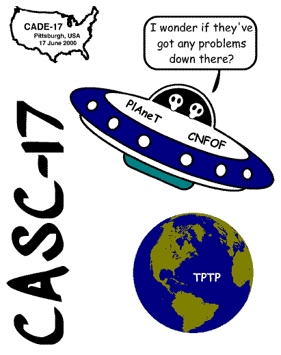

What ATP Systems?

All systems should capture a common notion of "truth" [Pelletier]
- Classical first-order and higher-order logic
- Soundness required
- Theoretical and implementation completeness not required
Fixed-point Systems
- Originally Otter, which got beaten down
- Now Prover9, which is slowly going down
- Previous winners
Examples
CVC4,
E,
iProver,
Leo-III,
MaLARea,
Satallax,
Vampire,
etc.